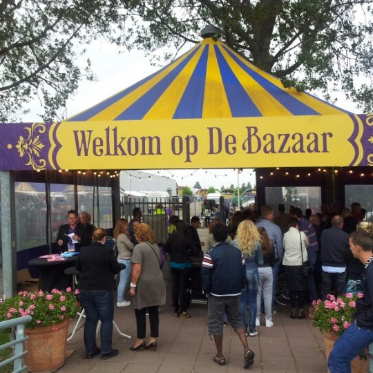
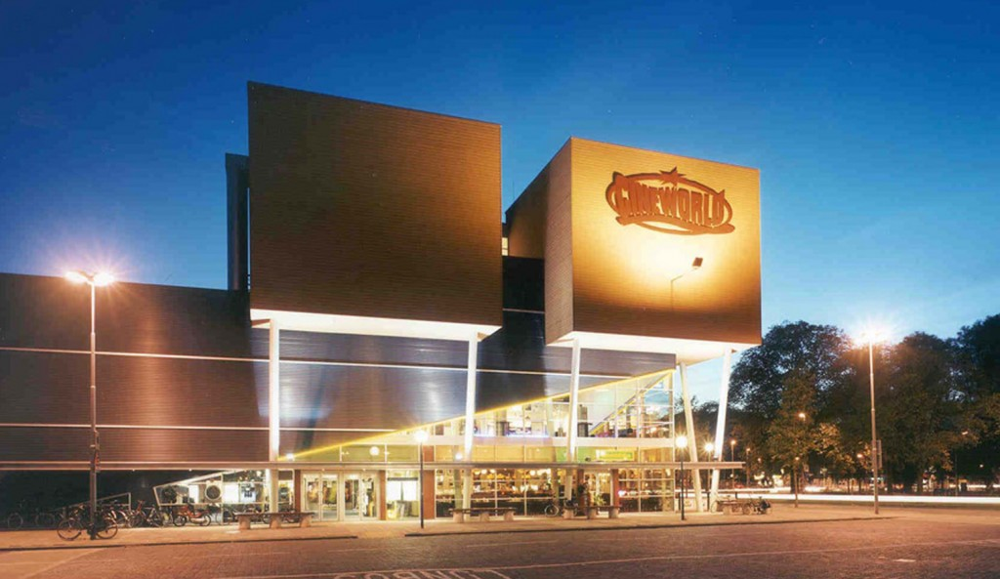
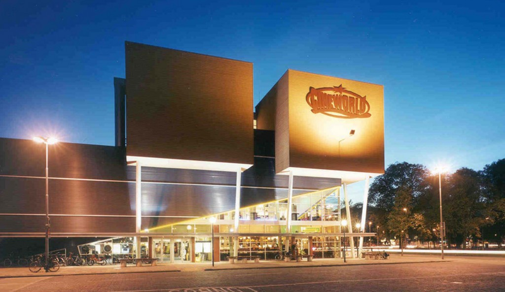

- Beverwijk heeft ongeveer 42.678 inwoners.
- Beverwijk heeft een oppervlakte van 19,60 km².
- De grooste overdekte markt van Europa is gevestigd in beverwijk.
- De inwoners van Beverwijk worden vaak Wijker genoemt.
- Als je in Beverwijk geboren bent ben je een Aardbei.
Feitjes over Beverwijk


De Bazaar
De Bazaar is een gezellige combinatie van winkels, outlets, kramen en horeca uit alle delen van de wereld.

Cineworld
Cineworld in Beverwijk is de go to place voor elke cinephile, met zes grote filmzalen en de hele week filmscreenings is er genoeg te zien.